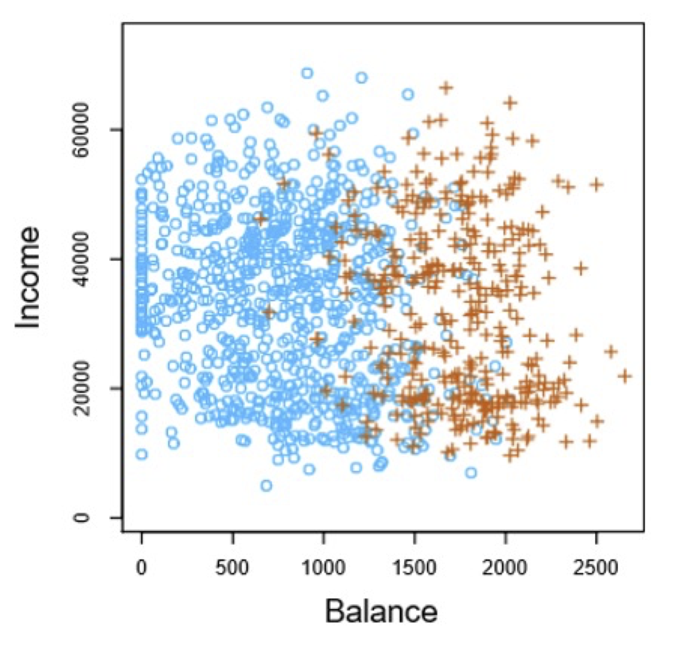

Fundamentals of
Data Analytics and
Predictions
Classification
Xi (Rossi) LUO
Department of Biostatistics and Data Science
School of Public Health
The University of Texas Health Science Center at Houston
Classification & Regression
-
Classification: predict a class label; a choice from a predefined list of possibilities
- Binary classification
- Multiclass classification
- Regression: predict a continuous number
Examples of Classification Problems
- Electronic Health Records (EHR)
- Predict patient status (sick or not)
- Image Classification
- Cancer imaging: malignant or benign
- Fun applications: dogs or cats
- R: quick review
- Emails: spam or not
- Tweets: offensive or not
Can we predict whether a customer will buy a boat?
Goal is to send out promotional emails to people who are likely to actually make a purchase, but
not bother those customers who won’t be interested!
Classical Example: Classifying Iris Species
- Meet the Data
- Measuring Success: Training and Testing Data
- First Things First: Look at Your Data
- Building Your First Model (e.g. k-NN)
- Making Predictions
- Evaluating the Model
Classification Problems
- Here the response variable $Y$ is qualitative. Our goals are to:
- Build a classifier $C(X)$ that assigns a class label from $C$ to a future unlabeled
observation $X$
- Given a feature vector $X$ and a qualitative response $Y$ taking values in the set
$C$,
the classification task is to build a function $C(X)$ that takes as input the
feature
vector $X$ and predicts its value for $Y$
- Assess the uncertainty in each classification
- Often, we are more interested in estimating the probabilities that $X$ belongs to
each
category in $C$
- For example, it is more valuable to have an estimate of the probability that an
insurance claim is fraudulent, than a classification fraudulent or not
- Understand the roles of the different predictors among $𝑋=(𝑋_1,𝑋_2, …, 𝑋_𝑝)$
Example: Credit Card Default
Can We Use Linear Regression?

Linear vs. Logistic Regression—1
- Linear regression does not estimate $Pr(Y = 1|X)$ well.
- Logistic regression seems well suited to the task.
Linear vs. Logistic Regression—2
- Now suppose we have a response variable with three possible values. At ER, we must classify them
according to their symptoms.
$$
Y = \begin{cases}1 \quad & \text{if stroke} \\
2 \quad & \text{if drug overdose} \\
3 \quad & \text{if epilipetic seizure}
\end{cases}
$$
- This coding suggests an ordering, and in fact implies that the difference between stroke and
drug overdose is the same as between drug overdose and epileptic seizure.
- Linear regression is not appropriate here.
- Multiclass Logistic Regression or Discriminant Analysis are more appropriate
Logistic Regression—2
- Logistic regression ensures that our estimate for p(X) lies between 0 and 1
Maximum Likelihood
- We use maximum likelihood to estimate the parameters,
$𝑙(𝛽_0+𝛽)=∏_{i:y_i=1}𝑝(𝑥_𝑖) \prod_{i:y_i=0}{1-p(x_i)}$
- This likelihood gives the probability of the observed zeros and ones in the data. We pick 0 and
1 to maximize the likelihood of the observed data
- Most statistical packages can fit linear logistic regression models by maximum likelihood.
- In R we use the glm function
- For Default credit card example, fit logistic regression
Making Predictions
- What is our estimated probability of default for someone with a credit card balance of $1000?
$\hat{p}(x)=\frac{e^{\beta_0+\beta_1x}}{1+e^{\beta_0+\beta_1x}}=\frac{e^{-10.6513+0.0055\cdot1000}}{1+e^{-10.6513+0.0055\cdot1000}}=0.006$
- With a balance of $2000
$\hat{p}(x)=\frac{e^{\beta_0+\beta_1x}}{1+e^{\beta_0+\beta_1x}}=\frac{e^{-10.6513+0.0055\cdot2000}}{1+e^{-10.6513+0.0055\cdot2000}}=0.586$
Making Predictions
- Let’s do it again, using student as the predictor
- $\hat{p}(𝑑𝑒𝑓𝑎𝑢𝑙𝑡=𝑌𝑒𝑠 |𝑝 ğ‘¡ğ‘¢ğ‘‘ğ‘’ğ‘›ğ‘¡=𝑌𝑒𝑠 )=\frac{e^{−3.5041+0.4049\cdot1}}{1+e^{−3.5041+0.4049\cdot1}}=0.0431$
- $\hat{p}(𝑑𝑒𝑓𝑎𝑢𝑙𝑡=𝑌𝑒𝑠 |𝑝 ğ‘¡ğ‘¢ğ‘‘ğ‘’ğ‘›ğ‘¡=No)=\frac{e^{−3.5041+0.4049\cdot0}}{1+e^{−3.5041+0.4049\cdot0}}=0.0292$
Logistic Regression With Several Variables
$$log⁡(\frac{p(𝑋)}{1−p(𝑋)} )=𝛽_0+𝛽_1 𝑋_1+...\beta_pX_p$$
$$p(x)=\frac{e^{\beta_0+\beta_1x_1+...\beta_px_p}}{1+e^{\beta_0+\beta_1x_1+...\beta_px_p}}$$
- The Default credit card example
- Using balance, income, and student
Confounding
- Students tend to have higher balances than non-students, so their marginal default rate is
higher than for non-students
- But for each level of balance, students default less than non-students
Logistic Regression With Multiple Classes
- Also known as multinomial regression
-
It is easily generalized to more than two classes
$p(Y=k|X)=\frac{e^{\beta_{0k}+\beta_{1k}x_1+...\beta_{pk}x_p}}{\sum_{l=1}^{k}e^{\beta_{0l}+\beta_{1l}x_1+...\beta_{pl}x_p}}$
- Here there is a linear function for each class.